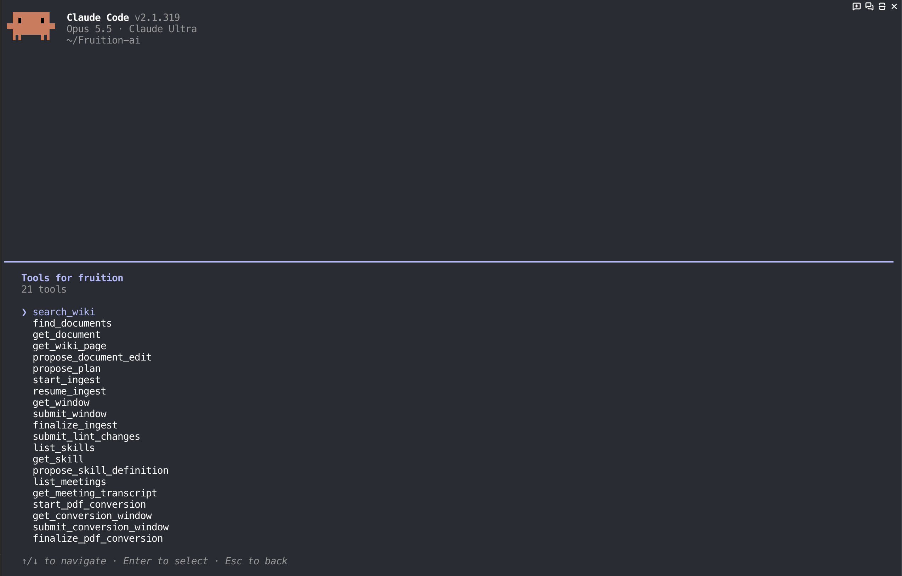

01 배경
그런데 외부 AI가 편집까지 하려면 검색뿐 아니라 변경 흐름까지 연결하고, 쓰기와 승인 권한을 넘겨야 했습니다. 외부 AI가 직접 쓰고 승인하면 사용자가 확인하지 않은 변경이 저장될 수 있고, 연결 해제와 오래된 문서 버전도 처리해야 했습니다.
사용자는 이미 비용을 내고 있는 AI 도구와 모델을 그대로 쓰면서 Fruition에 쌓인 문서와 Wiki를 활용합니다. 실제 변경은 Fruition 웹에서 내용과 견적을 확인한 뒤 승인합니다.
02 역할 분리와 실제 클라이언트 검증
외부 모델과 서비스의 책임 분리
문제 상황 외부 AI를 연결하려고 권한, 저장, 승인 흐름을 따로 만들면 기존 서비스와 경계가 달라집니다.
판단 문서 이해와 변경안 생성은 사용자의 모델에 맡기고, 권한 확인과 실행은 Fruition의 기존 서비스가 그대로 맡게 했습니다.
구현 OAuth 연결을 사용자, 워크스페이스, 클라이언트, 허용 범위에 묶고 요청마다 현재 권한을 확인합니다. 문서와 Wiki 검색 및 조회, 편입과 편집 제안, PDF, 스킬, 회의록 등의 도구를 연결했습니다.
확인한 결과 실제 Claude Code에서 확장된 도구 21개가 목록에 뜨는 것을 확인했습니다. 목록 확인일 뿐, 21개 도구를 모두 실행해 성공한 것은 아닙니다.
변경 제안과 웹 승인 및 저장 분리
문제 상황 AI가 승인까지 수행하거나 승인 후 원문이 바뀌면 사용자가 확인한 내용과 다른 변경이 저장될 수 있습니다.
판단 MCP에는 승인 도구를 두지 않고 사람이 웹에서 미리보기와 견적을 확인해 승인하도록 했습니다.
구현 승인한 버전, 해시, 범위, 가격을 고정하고 실제로 쓰기 직전에 권한과 충돌을 다시 검사합니다. 정산은 변경과 함께 저장한 영수증으로 하고, 같은 요청을 다시 보내면 같은 결과를 돌려줍니다.
확인한 결과 합성 문서로 Codex와 Claude Code 각각에서 편입, 웹 승인, Wiki 검색과 본문 조회, 편집 제안, 웹 승인과 저장, 원문 재조회까지 순서대로 확인했습니다. Claude Code에서는 출시 요일만 Monday → Wednesday로 바뀌고 담당자와 줄바꿈은 그대로였습니다.
연결 회수와 문서 버전 경계 검증
문제 상황 토큰이 남아 있거나, 문서 이름과 이동에 따른 버전을 본문 버전과 혼동하면 접근 회수나 정상 편집이 깨질 수 있습니다.
판단 현재 연결 상태로 접근을 판단하고, 본문 변경 충돌은 본문 버전을 기준으로 검사했습니다.
구현 실제로 검증하면서 게이트웨이에서 빠진 경로, 편집 범위 계산, 본문과 메타데이터 버전 혼동을 찾아 고쳤습니다. 사용자가 연결을 해제하면 새 접근은 막고 다른 활성 연결은 유지합니다.
확인한 결과 두 클라이언트에서 OAuth 토큰이 자연스럽게 갱신되는 것을 확인했습니다. Codex 연결을 해제한 뒤 실제 접근은 403으로 막혔고, Claude 연결은 활성 상태를 유지했습니다. 오래된 본문 버전으로 보낸 편집 제안은 SOURCE_CHANGED로 거절됐습니다.
03 개선한 처리 흐름

flowchart TD
C[Codex 또는 Claude Code] --> O[OAuth 연결과 현재 권한 확인]
O --> R[문서와 Wiki 검색 및 조회]
R --> P[외부 AI가 변경안 제출]
P --> V[서버가 범위와 원문 버전 검사]
V --> W[웹에서 변경 내용과 견적 확인]
W --> A{사용자 승인}
A -->|승인| X[권한과 충돌 재검사]
A -->|거절| N[기존 자료 유지]
X --> S[기존 서비스에 저장하고 영수증 기록]
S --> Q[MCP로 변경 원문 재조회]MCP는 변경안을 제출하고 사용자는 Fruition 웹에서 승인합니다. 실제 변경은 기존 서비스 경로로 수행하며 저장 결과를 다시 조회해 확인합니다.
Mermaid 원문 보기
flowchart TD
C[Codex 또는 Claude Code] --> O[OAuth 연결과 현재 권한 확인]
O --> R[문서와 Wiki 검색 및 조회]
R --> P[외부 AI가 변경안 제출]
P --> V[서버가 범위와 원문 버전 검사]
V --> W[웹에서 변경 내용과 견적 확인]
W --> A{사용자 승인}
A -->|승인| X[권한과 충돌 재검사]
A -->|거절| N[기존 자료 유지]
X --> S[기존 서비스에 저장하고 영수증 기록]
S --> Q[MCP로 변경 원문 재조회]04 결과와 배운 점
Codex와 Claude Code에서 편입, 검색, 승인, 편집, 재조회 확인
합성 테스트 계정과 문서로 두 실제 클라이언트의 핵심 흐름을 검증했습니다. Codex는 문서 버전 1 → 2, Claude Code는 3 → 4로 변경됐고, 최종 원문과 해시를 MCP로 다시 조회했습니다. 연결을 해제하면 접근이 막히고 다른 연결은 유지되는 것도 확인했습니다. 추가 기능은 실제 PostgreSQL 통합 테스트 33개와 단위, 계약 테스트 6개를 통과했습니다.
2026-11-09 의사록 기준으로 dev에 병합하고 격리 환경에서 검증한 결과입니다. 운영 배포 완료나 도구 21개 전체 실행 성공을 뜻하지 않습니다. 확장 도구인 PDF, 스킬, 회의록의 전체 네이티브 실행은 미검증이고, 원문을 편집한 뒤 기존 Wiki가 자동으로 갱신되는지도 검증하지 않았습니다. 테스트 견적은 운영 가격이 아닙니다.